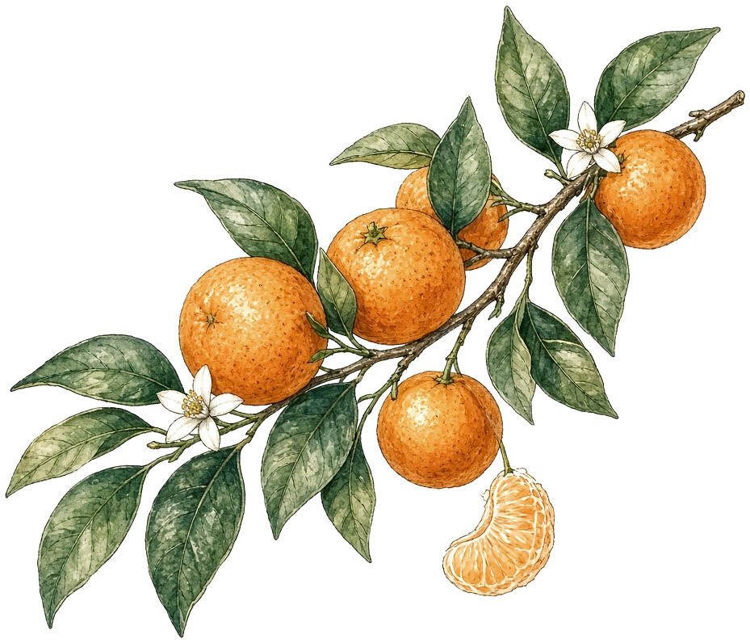
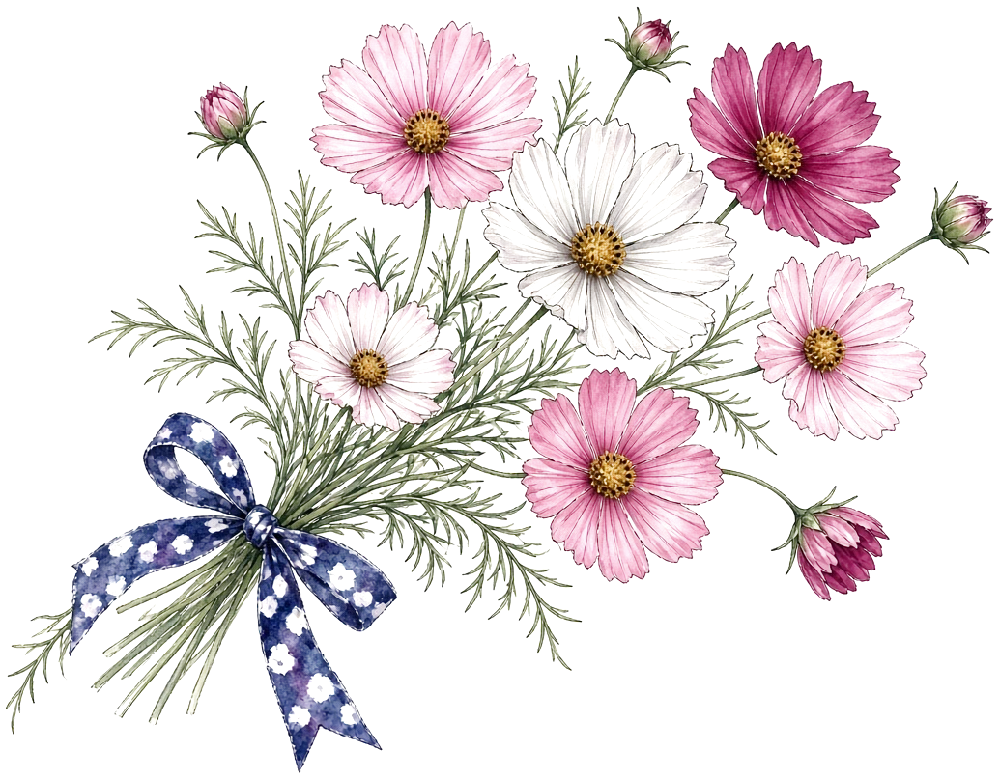
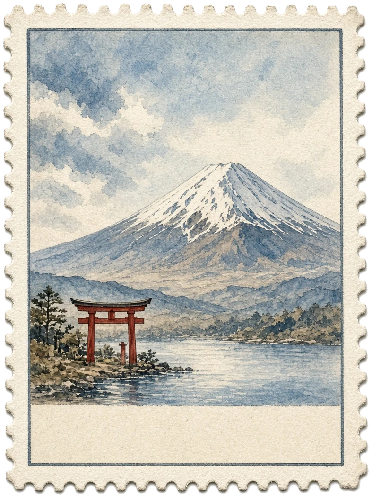
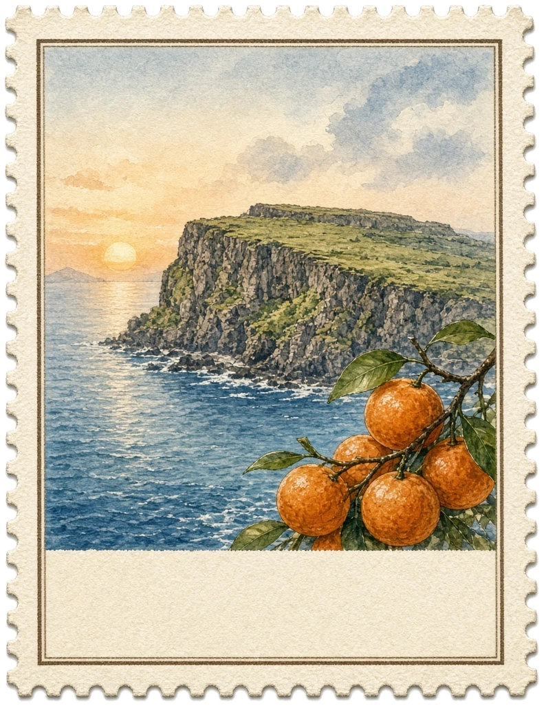

THE PLACES
01
Japan
日本
02
Semporna
仙本那
03
Bali
巴厘岛
04
Dali
大理
05
Shenzhen Bay
深圳湾
06
Jeju
济州岛
FUJIYOSHIDA
JAPAN · 2026
★
★
Travel Journal · 2026


A Scrapbook of Six Journeys
TRAVEL
JOURNAL
keep the little things
Japan
Bali

NIPPON
84

KOREA
₩ 430
MALAYSIA
50 sen
NUSA PENIDA
BALI · 2026
★
★
HIGH-SPEED RAIL · D-TRAIN
KUNMING
→
DALI
CLASS
2nd
SEAT
06F
YEAR
2026
No.
CN0426
Japan · Semporna · Bali · Dali · Shenzhen Bay · Jeju